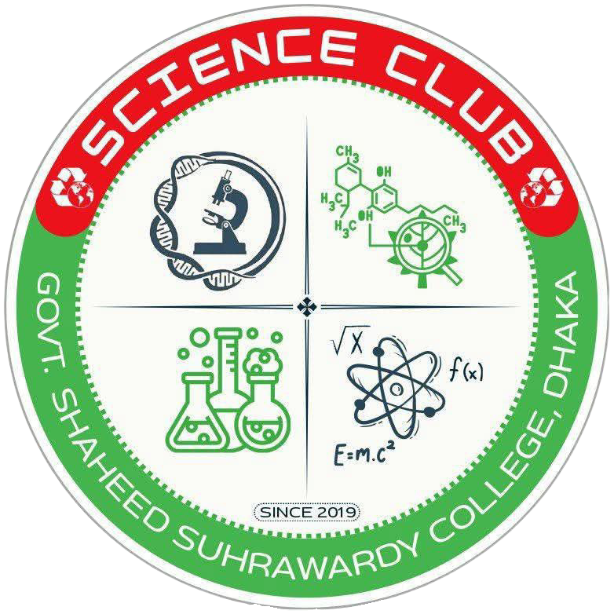

প্রফেসর ডঃ কাকলি মুখোপাধ্যায়
অধ্যক্ষ, সরকারি শহীদ সোহরাওয়ার্দী কলেজ, ঢাকা
অধ্যক্ষ, সরকারি শহীদ সোহরাওয়ার্দী কলেজ, ঢাকা

কনভেনার, জিএসএসসি বিজ্ঞান ক্লাব
সহযোগী অধ্যাপক, পদার্থবিজ্ঞান বিভাগ

সদস্য, জিএসএসসি বিজ্ঞান ক্লাব
সহকারী অধ্যাপক, উদ্ভিদবিদ্যা বিভাগ

সদস্য, জিএসএসসি বিজ্ঞান ক্লাব
সহকারী অধ্যাপক, রসায়ন বিভাগ

সভাপতি
জিএসএসসি বিজ্ঞান ক্লাব
যুগ্ম সাধারণ সম্পাদক / সাংগঠনিক সম্পাদক
জিএসএসসি বিজ্ঞান ক্লাব